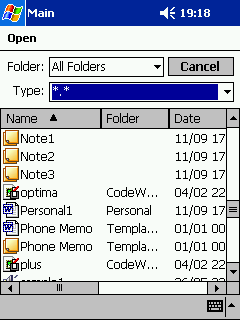
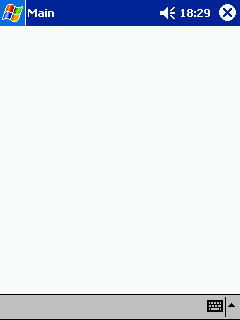
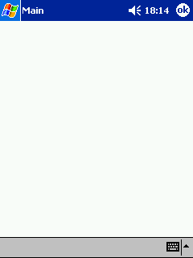
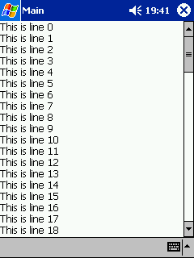
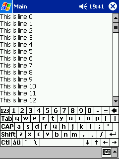
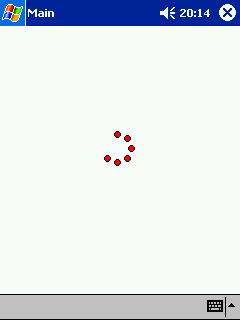
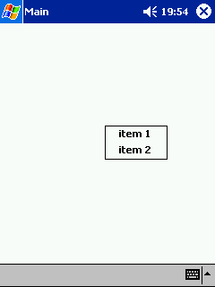
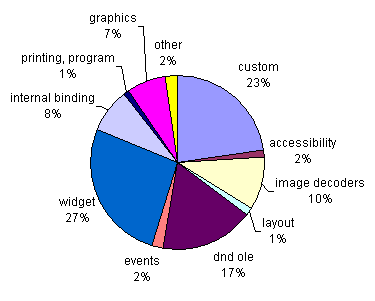
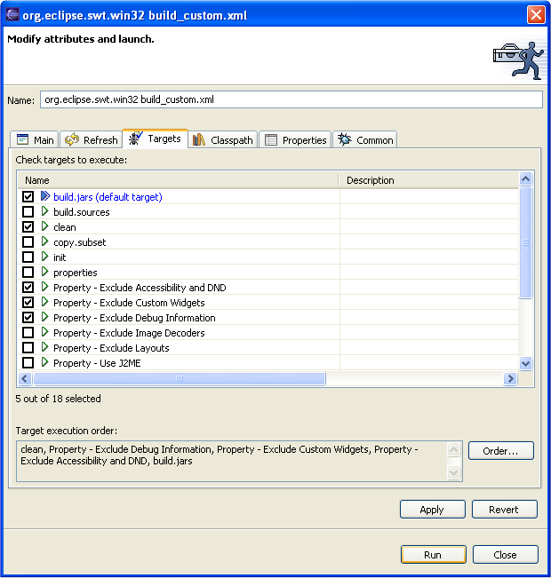
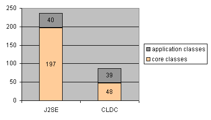

© Copyright International Business Machines Corporation, 2003. All rights reserved.
A small cup of SWT
A bag of hints, tricks and recipes
for developing SWT apps on the Pocket PC
Summary
Are you interested in developing applications for the Microsoft® Pocket
PC? Are
you a desktop developer curious about embedded user interfaces? A
well-built embedded application is both user and resource friendly.
User expectations are high. Resources are very limited...
By Christophe Cornu, IBM OTI Labs
September 19, 2003
Introduction
In the first part of the article, we will list some common UI
guidelines that are followed by native Pocket PC applications. We will
show
how they map to the SWT API. In the second part, we will look at ways
to
reduce the size of SWT applications. In the last part, we
will examine how application startup time can be improved by writing an
SWT application using the Connected Limited Device Configuration (CLDC) Java™ profile.
UI guidelines for the Pocket PC
A native personal digital assistant (PDA) application follows the rules of its platform. These
guidelines contribute to the end user experience. They define a common
look and feel and make the best use of the limited resources. For
example, PDAs often provide a small screen and
no
keyboard. The Pocket PC defines a few essential user interface patterns.
Application bringing up a File dialog box
On the Pocket PC, the main application window is always full screen.
The bottom of the screen is reserved for the menu bar. There is no
border or title. Instead, the title appears at the top of the screen
along with the Start menu and the clock (Figure 1). Here is a small
Java program
that uses the SWT API to create a File dialog box.

Figure 1 - File dialog box
import org.eclipse.swt.*;
import org.eclipse.swt.widgets.*;
public class FileDialogMain {
public static void main(String[] args) {
Display display = new Display();
 Shell shell = new Shell(display);
Shell shell = new Shell(display);
 shell.setText("Main");
Menu menu = new Menu(shell, SWT.BAR);
shell.setText("Main");
Menu menu = new Menu(shell, SWT.BAR);
 shell.setMenuBar(menu);
shell.open();
FileDialog dialog = new FileDialog(shell, SWT.OPEN);
String name = dialog.open();
if (name != null) shell.setText(name);
while (!shell.isDisposed()) {
if (!display.readAndDispatch())
display.sleep();
}
display.dispose();
}
}
shell.setMenuBar(menu);
shell.open();
FileDialog dialog = new FileDialog(shell, SWT.OPEN);
String name = dialog.open();
if (name != null) shell.setText(name);
while (!shell.isDisposed()) {
if (!display.readAndDispatch())
display.sleep();
}
display.dispose();
}
}
Use to create
your application window. Two other styles are commonly used by Pocket
PC applications. If your application is dialog-based, as in Figure 3,
you
would invoke the constructor Shell(display, SWT.CLOSE).
The style SWT.RESIZE creates a Shell that is
automatically resized when the virtual keyboard of the Pocket PC is
used (Figure 4). No other Shell style is relevant to the Pocket PC.
Note about Pocket PC 2002
The Shell created in contains a smart minimize
button on Pocket PC 2002 (see Figure 2 - upper-right corner). The user
can tap on the smart minimize button to hide (but not close) the
current application and to return to the last application used. The
application can then be restored through the system task list - a
utility for managing applications currently running. To see the smart
minimize button in Figure 2, run the previous example and click Cancel
to close the File dialog.

Figure 2 - Smart minimize on Pocket PC
2002
Shell.setText specifies
the text displayed in the navigation bar at the top of the screen
(Figure 1). This text is also displayed in the system task list.
There is one last important step to accomplish before we get a nice-looking
Pocket PC application.... We need to create a menu bar and
attach it to the Shell.
The menu bar is a gray rectangular area at the very bottom of the
screen (Figure 1). Any Pocket PC application must set a menu bar on the
top-level Shell.
 PDA users don't explicitly terminate an application prior
to switching to a new one. Consequently, the menu bar never contains a
Close menu item. This differs from desktop applications, which often
define a File menu with a Close menu item.
PDA users don't explicitly terminate an application prior
to switching to a new one. Consequently, the menu bar never contains a
Close menu item. This differs from desktop applications, which often
define a File menu with a Close menu item.
Dialog-based application
On the Pocket PC, a dialog-based application is full screen and contains
a small OK button (see Figure 3, upper-right corner). The following
Java program creates an SWT-dialog-based application.

Figure 3 - OK button
import org.eclipse.swt.*;
import org.eclipse.swt.widgets.*;
public class OkButton {
public static void main(String[] args) {
Display display = new Display();
Shell shell = new Shell(display, SWT.CLOSE);
shell.setText("Main");
Menu menu = new Menu(shell, SWT.BAR);
shell.setMenuBar(menu);
shell.addListener(SWT.Close, new Listener() {
public void handleEvent(Event e) {
System.out.println("Ok button tapped");
}
});
shell.open();
while (!shell.isDisposed()) {
if (!display.readAndDispatch())
display.sleep();
}
display.dispose();
}
}
The shell style SWT.CLOSE creates
a dialog with a small OK button. The application registers the SWT.Close event that is notified
when the OK button is selected. The shell can then process user data before closing.
Application resizing when the virtual keyboard shows up
The Pocket PC does not have a physical keyboard. Instead it provides an
input panel (the exact name is soft input panel, or SIP). The input
panel contains the
image of a keyboard (see figure 5 - bottom part) or an area to
interpret hand-written characters. The input panel is either hidden
(Figure 4) or visible (Figure 5) as controlled by the SIP button
(Figure 4 - the keyboard icon in the bottom-right corner). Here is a
simple Java application that creates an SWT application that resizes
automatically when the input panel is set visible or subsequently
hidden.
|

Figure 4 - Input panel
hidden
|
|

Figure 5 - Input panel
visible
|
import org.eclipse.swt.*;
import org.eclipse.swt.widgets.*;
import org.eclipse.swt.layout.*;
public class SipResize {
public static void main(String[] args) {
Display display = new Display();
Shell shell = new Shell(display, SWT.RESIZE);
shell.setLayout(new FillLayout());
shell.setText("Main");
Menu mb = new Menu(shell, SWT.BAR);
shell.setMenuBar(mb);
Text text = new Text(shell, SWT.MULTI | SWT.V_SCROLL);
String buffer = "";
for (int i = 0; i < 100; i++) {
buffer += "This is line " + i + "\r\n";
}
text.setText(buffer);
shell.open();
while (!shell.isDisposed()) {
if (!display.readAndDispatch())
display.sleep();
}
display.dispose();
}
}
The style SWT.RESIZE
creates a full-screen shell that is
resized automatically when the user shows or hides the input panel.
The shell fills the space left between the navigation menu bar at the
top
and the input panel or the menu bar at the bottom (Figure 5). The
sample adds widgets to make the
transition more visual.
A native Pocket PC
application is expected to be "friendly" with the input panel. That
implies:
- The user must be able to input data with the input panel - every
time
the application requires text entry. The input panel should not hide
text widgets. The first solution is to layout text widgets in
the first part of the screen. The second solution is to resize the
window when the input panel is turned on - by using the shell style
SWT.RESIZE,
as shown in the sample above.
- The application should restore the input panel to the state the
user left it in the last time this application was used. This state is
automatically restored by SWT and requires no particular application
handling.
Application using a pop-up menu
The Pocket PC uses a
stylus instead of a mouse. The traditional right-click button is
replaced with the stylus hold gesture defined as follows. The user taps
on
the screen with the stylus and holds it down. The Pocket PC 2002
provides a visual cue by drawing red circles
around the stylus during this gesture (Figure 6). After a certain
amount of time, a popup menu shows up (Figure 7).
|

Figure 6 - Stylus hold animation
on Pocket PC 2002
|
|

Figure 7 - Pop-up menu activated
|
import org.eclipse.swt.*;
import org.eclipse.swt.widgets.*;
public class StylusHold {
public static void main(String[] args) {
Display display = new Display();
Shell shell = new Shell(display);
shell.setText("Main");
Menu mb = new Menu(shell, SWT.BAR);
shell.setMenuBar(mb);
Menu menu = new Menu(shell, SWT.POP_UP);
MenuItem item = new MenuItem(menu, SWT.CASCADE);
item.setText("item 1");
MenuItem item2 = new MenuItem(menu, SWT.CASCADE);
item2.setText("item 2");
shell.setMenu(menu);
shell.open();
while (!shell.isDisposed()) {
if (!display.readAndDispatch())
display.sleep();
}
display.dispose();
}
}
The pop-up menu uses the same SWT.POP_UP
style as on the desktop platform.
The event SWT.MenuDetect
can be registered to detect the
hold gesture
on a Shell. The events SWT.MOUSE_UP, SWT.MOUSE_DOWN
and SWT.MOUSE_MOVE map to the corresponding stylus
actions on the Pocket PC.
Memory and size
This section discusses the size contributed by the SWT library on the
Microsoft Windows ® desktop platform and on an embedded target (Pocket PC). The
internal architecture of SWT allows parts of the API to be removed.
Thus the SWT library can be customized to fit within the requirements of
a
particular target.
Size of different SWT configurations
Structure of the SWT API
The full SWT API is divided into the following packages.
- org.eclipse.swt (constants)
- org.eclipse.swt.widgets (native widgets)
- org.eclipse.swt.events (event listeners)
- org.eclipse.swt.graphics (graphics drawing, image decoders)
- org.eclipse.swt.layout (layouts)
- org.eclipse.swt.dnd (drag and drop)
- org.eclipse.swt.ole (ole)
- org.eclipse.swt.accessibility (accessibility)
- org.eclipse.swt.custom (custom widgets)
- org.eclipse.swt.printing (printing)
- org.eclipse.swt.program (registry)
The SWT for Pocket PC supports the embedded SWT API. This
represents a subset within the following packages.
- org.eclipse.swt
- org.eclipse.swt.widgets
- org.eclipse.swt.events
- org.eclipse.swt.graphics
- org.eclipse.swt.layout
The SWT JAR file provides the public API
and its implementation for a
particular platform. The SWT native library defines the mapping between
internal SWT Java methods and the operating system. It also defines a
number of callbacks that allow the operating system to call into Java.
The standard Windows SWT jar is about 994KB. The class file debug
information accounts for about 30% (307KB). The full Windows SWT jar
without debug information uses 687KB. In addition, the Windows SWT native
shared library takes 276KB.
The standard Pocket PC SWT jar supports a subset of the SWT API. It
is about 436KB without debug information. In addition, the Pocket PC SWT
native shared library (ARM processor)
takes 133KB.
Custom SWT jars and native libraries can be built with all or part of
the SWT API. Figure 8 provides the size distribution for
the standard Windows SWT jar library (as shipped with Eclipse 2.1).

Figure 8 - SWT jar size distribution
(Windows, SWT version 2.1)
Tips to reduce the size of the SWT library
A custom SWT jar can be built to achieve a particular size requirement.
The Eclipse Web site provides access to SWT libraries for different
targets (see the SWT FAQ). These different
versions are built and customized automatically using Ant scripts.
Follow these steps to build your own custom SWT jar. (The SWT source code is accessible from the Eclipse Web site.)
- Import the two projects org.eclipse.swt and org.eclipse.swt.win32.wce_ppc.arm
into your Eclipse workspace.
- Locate the Ant script build_custom.xml. This file is located
in the project org.eclipse.swt.win32.wce_ppc.arm.
- Run this Ant script from within Eclipse. Modify the default
Property targets according to the SWT API you require. The Ant script
outputs the custom SWT jar to the folder org.eclipse.swt.win32.wce_ppc.arm/ws/win32.

Figure 9 - Ant script used to build a custom SWT jar
The standard Pocket PC SWT jar is built with the Property targets
checked on Figure 9. This configuration includes the first three
reductions
discussed below.
Exclude Debug Information
Excluding debug information is the single most useful optimization to
be considered. The SWT jar is reduced by 30%. Numbers below assume the
debug information has been excluded.
Exclude Custom Widgets
Custom widgets are about 150KB (representing 23% of the SWT JAR file). Write embedded SWT applications
that only use native widgets (org.eclipse.swt.widgets). Avoid custom
widgets. This trade-off reduces significantly the size of the SWT
jar.
Exclude Accessibility and DND
This option excludes Accessibility and drag-and-drop which together account for about 117KB (or 17% of the SWT JAR file).
Exclude Image Decoders
The image decoders are 65KB (or 10% of the file). SWT uses run-time introspection
to search for the available decoders. A decoder can be removed if it is
not needed. Class file decoders currently reside in the internal
package
org.eclipse.swt.internal.image.
Exclude Layouts
Layouts are 10KB (less than 1% of the file).
Use J2ME
The J2ME CLDC API is a subset of the standard J2SE API. This option produces an
SWT jar that is compatible with the J2ME CLDC profile.
 Layouts,
graphics and image decoders are very useful even in the context of an
SWT embedded application. It is desirable to keep these packages
unless
size requirements are very tight.
Layouts,
graphics and image decoders are very useful even in the context of an
SWT embedded application. It is desirable to keep these packages
unless
size requirements are very tight.
To go further
Further fine-grained size reduction can be considered to fulfill
extremely tight requirements.
- Unused SWT classes can simply be removed. For example, the
class
org.eclipse.swt.widgets.Tree can be removed if the
SWT
application is not using the tree widget. SWT is mostly implemented in
Java. A tool - an obfuscator for example - can be used to exclude
unused SWT classes.
- Removing unused JNI OS calls can reduce the size of the native
SWT library.
Each JNI call is wrapped with a preprocessor directive
#ifndef
OS_METHODNAME. Special tools can determine which SWT native
methods
are not referenced through all possible execution paths of a
particular SWT application. This information is used to build a header
file with a list of native methods to exclude. A sample header file
defines.h is available in the org.eclipse.swt project under the
folder "Eclipse SWT PI"/win32/library.
Detailed description of these last two very specialized optimizations
is beyond the scope of this article. Developers who are interested are invited
to use the SWT newsgroup
(news://news.eclipse.org/eclipse.platform.swt).
Startup time
A PDA user tends to switch quickly between tasks. For instance: “Take a
note. Update a
meeting schedule. Read an email. Monitor the GPS position”. Application
startup time must not interfere with this workflow. Startup time must
be as short as possible. We will see in this section when an SWT
application becomes visible on the Pocket PC screen and when it
becomes responsive to user input. It is then possible to architect an
SWT application so that lengthy processing code does not freeze the
application on startup.
Let’s consider a simple application called MyApp. This application
uses some form of persistent storage (e.g. a local file, a database
accessed wirelessly etc). Establishing that connection takes in the
order of five seconds. The user starts the application, performs some
queries using the UI, and modifies a record in the database. The
demo goes very well. The application is deployed to the PDAs of each
sales-person in the company. The team of developers receives hundreds
of phone calls the next day. The application does not work. The PDA
is broken. Some users have even hard reset their devices before the
five-second initialization period ended. Back to the whiteboard…
Startup time - bad example with lengthy initialization code
before the SWT event loop
import org.eclipse.swt.widgets.*;
public class MyApp {
static {
connectDataBase();
}
public static void main(String argv[]) {
Display display = new Display();
Shell shell = new Shell(display);
shell.setText("MyApp");
shell.open();
while (!shell.isDisposed()) {
if (!display.readAndDispatch())
display.sleep();
}
closeDataBase();
display.dispose();
}
static void connectDataBase() {
try {
Thread.sleep(5000);
} catch (Exception e) {}
}
static void closeDataBase() {
try {
Thread.sleep(5000);
} catch (Exception e) {}
}
}
The application MyApp becomes visible on the Pocket PC
when the Java
virtual machine has opened the shellReduce application code on startup
The call to the method connectDataBase() should be
executed after the
Shell is opened and after the event loop is entered. One
solution is to
bring up a screen with a message asking the user to tap on a button to
start the connection. The selection callback for the button is used to
call connectDataBase(). The startup time is not impacted
by
lengthy initialization user code anymore.
Be aware of what application code is actually executed before the event
loop is entered. It is particularly important to pay attention to
the application class initializers.
Before the
event loop is entered:
- Invoke as few application classes as possible so that the JVM’s
classloader does not have to resolve them on startup. If your main
class inherits from a deep hierarchy, all the super classes must be
resolved and initialized before the Main method actually gets to run.
- Review each of your class initializers. Lengthy operations
should not take place inside class initializers. Class initializers are
often used to load resources and native libraries. This common Java
idiom may cause here an unacceptable startup time.
Refactoring – move lengthy initialization code to callbacks
executed after the event loop has been entered
import org.eclipse.swt.*;
import org.eclipse.swt.layout.*;
import org.eclipse.swt.widgets.*;
public class MyApp {
public static void main(String argv[]) {
Display display = new Display();
Shell shell = new Shell(display);
shell.setText("MyApp");
shell.setLayout(new FillLayout());
final Button button = new Button(shell, SWT.PUSH);
button.setText("Connect");
button.addListener(SWT.Selection, new Listener() {
public void handleEvent(Event e) {
button.setText("Connecting");
connectDataBase();
button.setText("Connected");
}
});
shell.open();
while (!shell.isDisposed()) {
if (!display.readAndDispatch())
display.sleep();
}
closeDataBase();
display.dispose();
}
static void connectDataBase() {
try {
Thread.sleep(5000);
} catch (Exception e) {}}
static void closeDataBase() {
try {
Thread.sleep(5000);
} catch (Exception e) {}
}
}
The
lengthy call to the connectDataBase() method has moved
from the class
constructor to an event callback. This event callback is executed after
the
event
loop is entered. This refactoring improves the startup time of the
application. This implementation is still very naive. It
illustrates the need to avoid lengthy initialization code before
running the event loop. A better solution may use a progress meter and
a
separate thread.
Diagnose if an application runs too much initialization code
Follow these two easy steps to evaluate
application initialization time.
1. Add a line at the beginning of the Main class (If Main extends
one of your classes, instrument this super class instead. This
superclass is loaded first).
static long start = System.currentTimeMillis();
2. Add the following lines before entering the SWT event loop:
long end = System.currentTimeMillis();
System.out.println("User init time: " + (end - start));
Then check the list of application classes loaded on startup by the
JVM, as indicated below.
Start the application with the Java console (e.g., java.exe instead of
javaw.exe). Use the VM argument -verbose. Most JVMs
output the list
of Java classes as they get loaded. This can yield useful results
and direct the effort for refactoring.
If overall startup time remains too high, a lighter Java profile needs
to be considered as discussed below.
Reduce Java library code initialization on startup
The JVM must resolve a certain number of core Java
classes before it can execute the Main method of an application. The
virtual machine must clearly resolve the base class java.lang.Object.
The actual number of core Java classes depends on which Java profile
the application runs against.
The SWT Pocket PC port can be run against the familiar J2SE profile and
the J2ME CLDC one.
Startup time – J2SE
This data was collected on a Pocket PC 2002 HP Jornada 565 (with a
typical CPU ARM 206 Mhz). The JVM used is the IBM J9 VM for ARM Pocket
PC. The
program executed is the SWT HelloWorld for Pocket PC. Source for HelloWorld.java
The first run is used to collect the list of classes loaded by the
VM until the application shows up. This information is simply obtained
by passing the VM flag -verbose to the Java console.
For the second run, the VM was executed without any -verbose flag
and without console. The time was measured from the moment the
application shortcut is tapped in the Pocket PC Windows Explorer and
the moment the HelloWorld application comes up.
Total number of classes loaded: 237 (see
detailed list)
Number of core classes loaded prior to reaching the Main class: 197
Startup time: about 4.3 seconds
Startup time – J2ME CLDC
The same series of data is collected using the J2ME SWT Pocket PC
jar. The VM used was the Pocket PC ARM J9 VM, with the J2ME CLDC class
library. Note that the CLDC Java profile does not contain the Java API
System.loadLibrary. The SWT jar for CLDC cannot load the native SWT
library as a result. The IBM J9 VM is instructed to use the CLDC Java
profile and to load the native SWT library swt-win32-3002.dll with the
following VM command.
-jcl:cldc:loadlibrary=swt-win32-3002
Total number of classes loaded: 87 (see
detailed list)
Number of core classes loaded prior to reaching the Main class: 48
Startup time: about 1.9 seconds

Figure 10 -
Number of classes loaded (J2SE versus CLDC)
The number of core classes loaded prior to reaching the Main class
in the J2ME CLDC profile is about one fourth of the number the JVM needs to
load for the same program when using the J2SE profile. The startup
time is roughly cut in half in this example. Application classes
represent the Main class of the user
application and all classes subsequently loaded. SWT classes are
included in this category. The number of application classes does not
really vary with the Java profile in this example.
The J2ME CLDC profile is a good choice for people developing embedded
applications. It is possible to write an application that runs on
either J2SE or J2ME CLDC profiles by following some simple rules.
Profile-specific calls can be constrained to a particular
class. This profile class encapsulates the required refactoring when
porting a J2SE application to CLDC. For example, a stream opened using
java.io.FileOutputStream in the J2SE profile could be implemented with
the CLDC Connector.open API.
Further startup time improvement may require using special deployment
features specific to certain VMs and platforms. For example, the IBM J9
VM
can load classes under an optimized format called JXE. This format
reduces the work required by the classloader at runtime.
In summary, application startup time is dependent on two factors.
- User initialization code executed before the SWT event loop is
executed.
- The type of Java profile. A lightweight profile (which requires
fewer core classes) is preferable. SWT for the Pocket PC can be used
against the J2ME CLDC profile.
Further optimization can be achieved by using a custom deployment format
such as the J9 JXE format. It is possible to approach the startup time
of a native Pocket PC application by combining these techniques.
Conclusion
Each embedded platform presents unique characteristics. Common Pocket
PC UI features have been reviewed. The examples can serve as a
guide to write SWT applications that feel and look native on the
Pocket PC. Storage resources vary greatly and can be very scarce. A
custom SWT jar can be built with only the portions of the API used by
an SWT application. Design choices can be made to balance between
functionality and a size requirement. Application startup time is also an
important factor of usability. Lengthy initialization code should be
avoided before the SWT event loop is entered. Writing your SWT
application over the CLDC Java profile allows you to benefit from the
reduced overhead of this profile.
Quick reference
SWT
FAQ - What do I need to do to run SWT on the PocketPC?
SWT
FAQ - Where is the SWT library for the PocketPC?
IBM is a registered trademark of International Business Machines
Corporation in the United States, other countries, or both.
Java and all Java-based trademarks are trademarks
of Sun Microsystems, Inc. in the United
States,
other countries, or both.
Microsoft and Windows are registered trademarks of Microsoft
Corporation in the United States, other countries, or both.
Other company, product, and service names may be trademarks
or service marks of others.